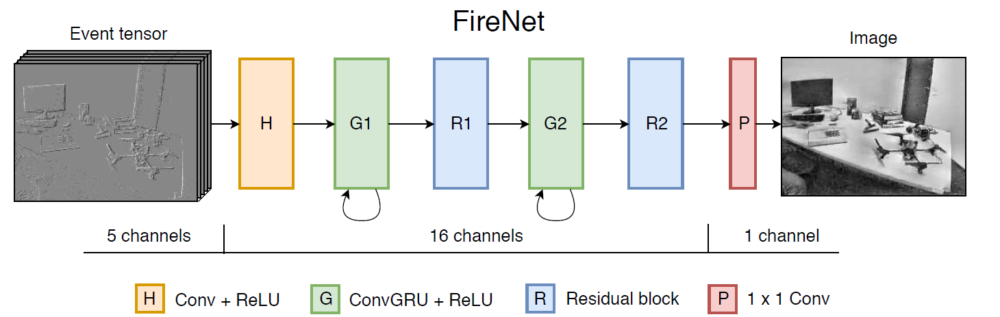
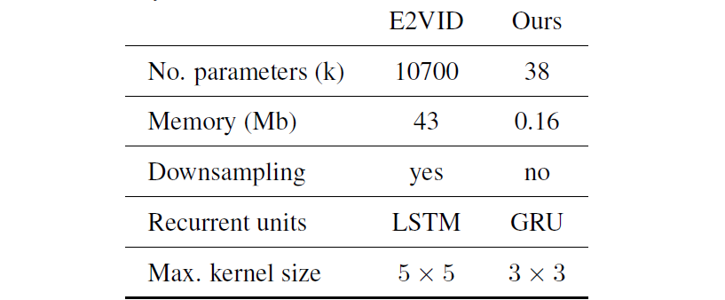
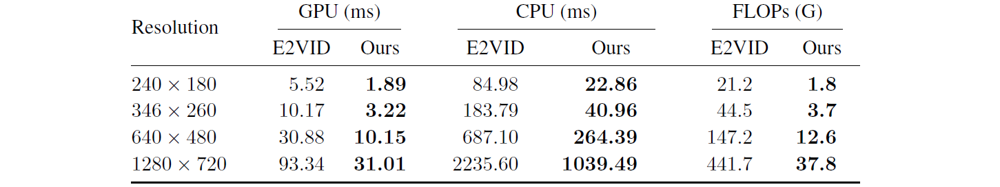
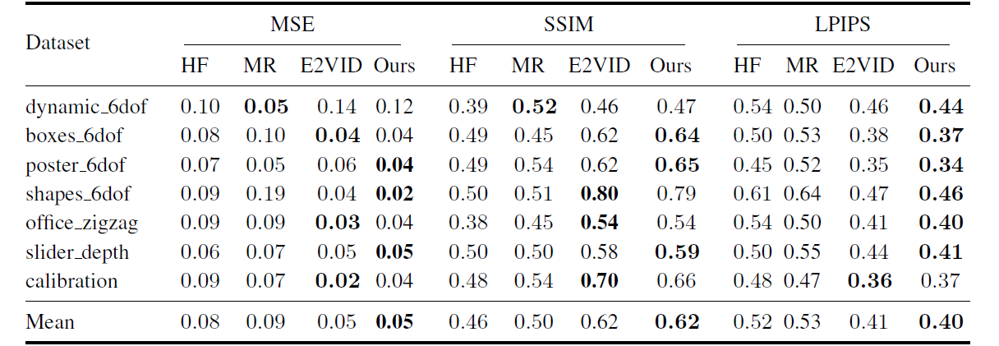
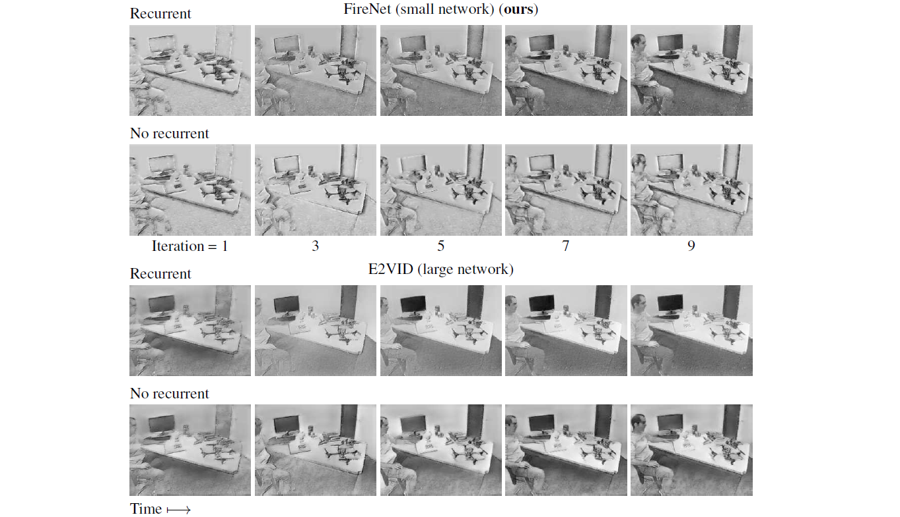
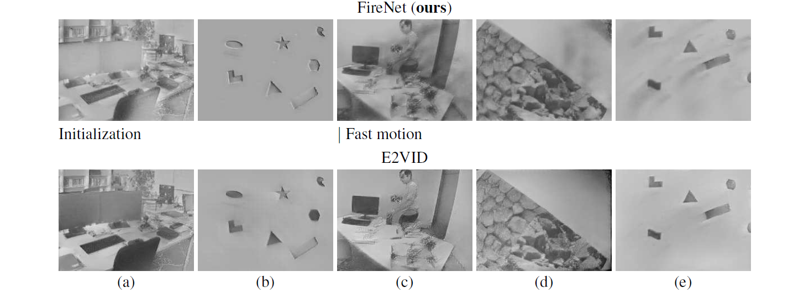

Fast Image Reconstruction with an Event Camera
Fast Image Reconstruction with an Event Camera
Abstract
事件相机是一种功能强大的新型传感器，能够以微秒级的分辨率，无运动模糊的捕捉大动态范围信息。此类相机的优势在于能够检测强度变化信息（事件）而不是直接捕捉强度图像；然后利用算法将事件转化为图像表示，用于分类等应用。
之前的工作依赖于hand-crafted空间与时间的平滑技术来从事件中重建图像。最前进的视频重建技术已经通过神经网络实现，神经网络的参数量很大（10M），而且计算成本很高，在现代GPU上，640*480分辨率的一次前向计算需要30ms。我们提出了一种新型的神经网络框架用于从事件重建视频，该框架比最先进的方法更小（38k vs 10M 参数），更快（10ms vs 30ms），且对性能的影响极小。
Method
表征方式：
参考E2Vid，用Voxel Grid，B=5.
网络结构：

网络结构如上图所示，使用全卷积网络，所有层使用单步长的卷积，也就是不下采样。除了最后一层采用的卷积。H层16通道卷积，循环单元G1，G2也为16通道，我们使用GRU代替LSTM，因为参数更少性能却接近（只有两个门）。残差块也为16通道，还有skip connection，最后一层采用的单步长卷积。下表是firenet和e2vid的区别之处、

训练：
数据集和E2vid一样，由ESIM生成，1000个2s的序列，950个训练，50个验证集。为了模拟真实的CTs（contrast threshold），我们用均值为0.18，标准差为0.03的正态分布，且每个事件后面都加1ms的refractory period。
对于损失，我们和E2vid保持一致，使用基于LPIPS的图像重建损失与基于光流的时序一致性损失。如下式所示：
其中，，，，我们用ADAM，10e-4训了tmd1000个epochs？
Results
计算效率：
在TITAN XP，i7-6900K上测的。在GPU和CPU上通过测量前向传播所需要的时间，我们选取了DAVIS240，DAVIS346，Samsung，prophesee和Celex上进行测试，计算FLOPs（the number of floating point operations per forward-pass）。下图是实验结果，我们的方法巨快。

精度：
对比了几个老方法和E2vid，在DAVIS240C上进行评估。用MSE，SSIM，LPIPS老三样，还做了局部直方图均衡化。下表是定量结果，薄纱老方法，和E2vid基本持平。

循环连接的消融实验：
探究循环单元对网络重构的影响，下图对比了E2vid和FireNet有没有循环连接的重构结果，E2vid可以实现没有循环连接的重构，我们相信这是因为其large size与感受野允许其从事件中提取部分边缘信息。然而，像这个小模型的感受野有限（最大），因此无法在没有循环连接的情况下可靠地重建图像。我们的网络是全卷积的，预测层中的像素只能看到其感受野内的事件，因此可以得到结论，循环连接是实现小网络的主要驱动因素。

缺陷：
在快速运动或初始化的情况下，FireNet存在拖尾或没有完全重建等trash现象，如下图所示，E2vid能够较好的重建图像，而FireNet会有各种拖尾等trash现象。为了突出显示smearing artefacts，我们在两种方法中都使用了每个张量50ms的固定时间窗，使用更少的时间窗口或减少每个输入张量的固定数量的事件都可以减少快速运动中的smearing现象。

总结
循环连接是实现小网络的关键，因为其允许随时间的推移构建和改进隐藏状态，重用以前的计算结果。我们相信FireNet在事件处理的快速、轻量级循环网络方面展现了令人兴奋的潜力。